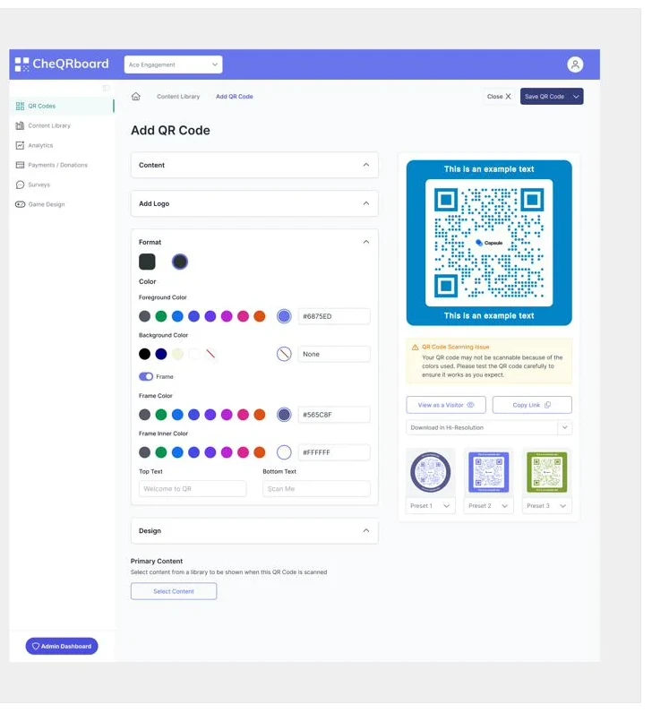

OSG · ICONOGRAPHY
Fintech icon system
Custom fintech icon sets drawn pixel by pixel in Figma, giving OSG one consistent visual language across web, print, email and trade show.
- Icon design
- Icon systems
- Figma
CASE STUDY · ZERO COPY LABS
I redesigned the UI and design system of a platform that lets zoos, museums and venues turn a printed QR code into a branded, interactive visitor experience.

OSG · ICONOGRAPHY
Custom fintech icon sets drawn pixel by pixel in Figma, giving OSG one consistent visual language across web, print, email and trade show.
OSG · BRAND
I led OSG's 2024 brand refresh and supported the 2022 rebrand, carrying each from strategy through templates so the brand held up across digital, print and web.
OSG · MATRIX IMAGING SOLUTIONS
Designed and built OSG's website and WordPress intranet from wireframes to code, and a SharePoint intranet with Power Automate workflows that I still maintain for Matrix Imaging Solutions.
PANASONIC NORTH AMERICA
Visual production for product launches, GTM campaigns and brand marketing across digital, social, print and trade show, on a two-person team.
Hover a role for the details
Visual DesignerCurrent
Panasonic North America · Remote
Visual production for product launches, GTM campaigns and brand marketing, plus an AI image pipeline that replaces traditional product shoots.
Founder & Principal DesignerCurrent
Raysan Designs LLC · Freelance studio
CheQRboard UI and design system for Zero Copy Labs, product design for Luma Works, and a SharePoint intranet for Matrix Imaging Solutions.
Senior Creative Designer
OSG · Remote
Custom fintech icon sets, the 2024 brand refresh, and the company website and intranet, from wireframes to code.
Senior Web Designer
PNY Technologies · Parsippany, NJ
Promoted to Lead in 2014 and Senior Web Designer in 2016. Web, email and digital campaigns across consumer and B2B product lines.
Graphic Designer
All Things Media · Ramsey, NJ
Email, collateral and mobile app UI for clients including Daimler and Disney.
I'm Ray Santos. I care about the smallest pixels in a system.
I trained in communication design at Pratt and spent nine years at PNY Technologies, growing from web designer to lead and then senior web designer. At OSG I drew the company's fintech icon sets and led its 2024 brand refresh. Today I design for Panasonic North America and run Raysan Designs.
Working on small teams taught me to own the whole path: the research, the system, the pixels and the handoff to engineering.
Available for work
Phone
(551) 284-9998